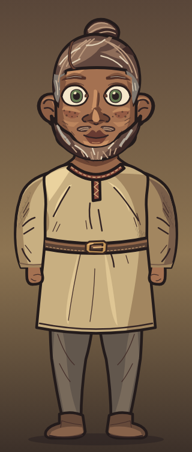

<!doctype html><html lang="ru"><meta charset="utf-8"><meta name="viewport" content="width=device-width,initial-scale=1"><title>Высота посадки ушей</title><style>body{font:16px system-ui;background:#25201b;color:#eee2cd;margin:0 auto;max-width:1280px;padding:1rem}
    a{color:#f4ca91}h1,h2{font:700 1.7rem Georgia,serif}nav ul{columns:3}.grid{display:grid;gap:1rem;
    grid-template-columns:repeat(auto-fit,minmax(230px,1fr))}article{min-width:0;border:1px solid #655343;
    background:#312821;padding:.6rem;border-radius:5px}a img{vertical-align:middle}img{max-width:100%;height:auto}
    .character{display:block;max-height:460px;width:auto;margin:auto}.card{width:32px;height:32px}
    .detail{display:block;width:100%;margin:.35rem 0}.compare{display:flex;align-items:flex-start;gap:.5rem}
    .compare a{flex:1;min-width:0}small{color:#dccab0}code{overflow-wrap:anywhere}@media(max-width:730px){nav ul{columns:1}}</style><main><nav><a href="index.html">Все разделы</a></nav><h1>Высота посадки ушей</h1><div class="grid"><article id="appearance__ear_height__standard"><h3>Обычная</h3><code>standard</code><a href="images/ff94298226c33f9ed1f552ccd4028687b6eadd04b3060b0f055b42ec471d8801.png"></a><p><a href="images/95a064c7d163e5b5e7558d4e8a41f20d4ed83a70b62b62470db9f9dc26e7adb0.png"></a> <small>32 × 32</small></p></article>
<article id="appearance__ear_height__high"><h3>Высокая</h3><code>high</code><a href="images/17a1b9aa6b3a98a9be7b7c547a3071f4e1a1fd980ad82cae63aa3183d421f723.png"></a><p><a href="images/fea0708184feac94790e0afcfa244783df666f9575a644a06e546e977ddfd193.png"></a> <small>32 × 32</small></p></article>
<article id="appearance__ear_height__low"><h3>Низкая</h3><code>low</code><a href="images/0c24732874a5bf186738c6693b7eca86093836dd3e0c1f0b67c2b662c3fe34c1.png"></a><p><a href="images/42e08405b844818595aea53db19cb933d393136ce0270a8abf5661c30063da8e.png"></a> <small>32 × 32</small></p></article></div></main></html>
